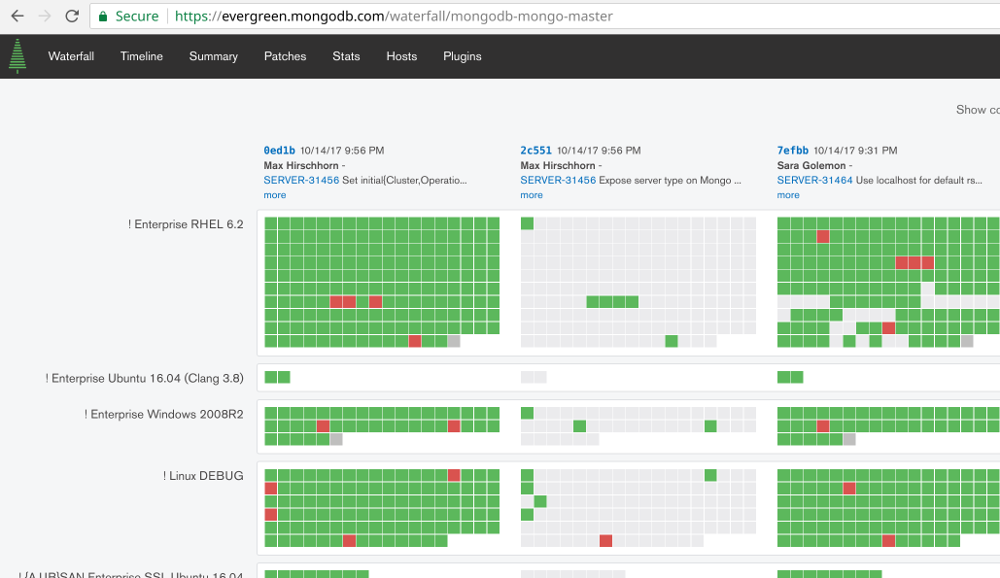

Measuring performance variability of EC2
Henrik Ingo, 2017 (cc by)


Agenda
MongoDB performance testing

100+ Projects
1500+ Hosts
100+ Build Variants
400k hours/month
Performance = 5% of that
(more in $$$)
Microbenchmarks
System performance test
EC2
(this talk)
c3.8xlarge, SSD
The goal
Repeatable results
(NOT max performance)

| Assumption | True / False |
|---|---|
| Dedicated instance = more stable performance | Not tested |
| Placement groups minimize network latency & variance | Not used yet |
| Different availability zones have different hardware | Not tested yet |
| For write heavy tests, noise comes from disk | False |
| Ephemeral (SSD) disks have least variance | False |
| There are good and bad EC2 instances | False |
| Just use i2 instances (better SSD) | False (True in theory) |
| You can't use cloud for performance testing | False |
We tested many aspects of EC2 and our own system. To help you follow the presentation, I will reveal up front what were the assumptions made when the system was first built, and how the assumptions fared in our testing.
The rest of the presentation I will then share how we tested different EC2 configurations and came to these conclusions.
It's common to see engineers making design decision based on things they read on the internet. As you can see, our system included LOTS of them!! I call it witchcraft. Old wives tales, not based in science. The point of this presentation is that that is bad idea! There are no short cuts. Assume nothing. Measure everything.
Method for testing noise in our EC2 clusters
- Tests produce 1 or more values as result.
- ops/sec
- To measure noise in the system:
- Lock the mongod binary used
- Repeat each test 5 times
- Repeat that on 5 different EC2 clusters
- = 25 data points
- In addition to MongoDB benchmarks, also test infrastructure components:
- fio = disk, home made cpu tests, iperf3 = network
What is noise?
noise = (max - min) / median
Goal is to minimize this single metric
| There are good and bad EC2 instances | False |

(min - median - max)
for each test & thread level
mmapv1 left, wiredTiger right
insert_vector, insert_ttl, index_build
highest; jtrue lowest
| Ephemeral (SSD) disks have least variance | False |
| Remote EBS disks have unreliable performance | False (piops) |
| Just use i2 instances (better SSD) | False (True in theory) |
| i2.8xlarge has much more RAM, and wiredTiger cacheSizeGB default is 50% of RAM. This caused checkpointing issues not seen on c3.8xlarge. |
| At this point we switched to c3.8xlarge + EBS PIOPS. |

CPU tuning
- Disable power save & frequency scaling
- idle=poll (kernel)
- Disable hyperthreading (echo 0 > /sys/...)
- Pin to socket (numactl)

| For write heavy tests, noise comes from disk | False |

Network noise tests
- We did network tests with iperf3
- Observed variability, especially in latency
- No tuning made it go away
- Otoh effect on our test results seems to be negligible
- Recently discovered we were using EC2 placement groups wrong

Canary tests
- The above fio, cpu and iperf3 tests were themselves added to our daily CI tests
- Run at the beginning of every cluster lifecycle
- Gives insight into EC2 noise, should it happen
- Has proven useful when triaging test failures!
- So far it mostly gives us confidence there's no correlation with our MongoDB tests
Summary
Assume nothing. Measure everything.
| You can't use cloud for performance testing | False |
Image credits: l2f1 @ Flickr (CC BY) belenko @ Flickr (CC BY) pinkmoose @ Flickr (CC BY) jo7ueb @ OpenClipart.org (PD) ivanlasso @ OpenClipart.org (PD)